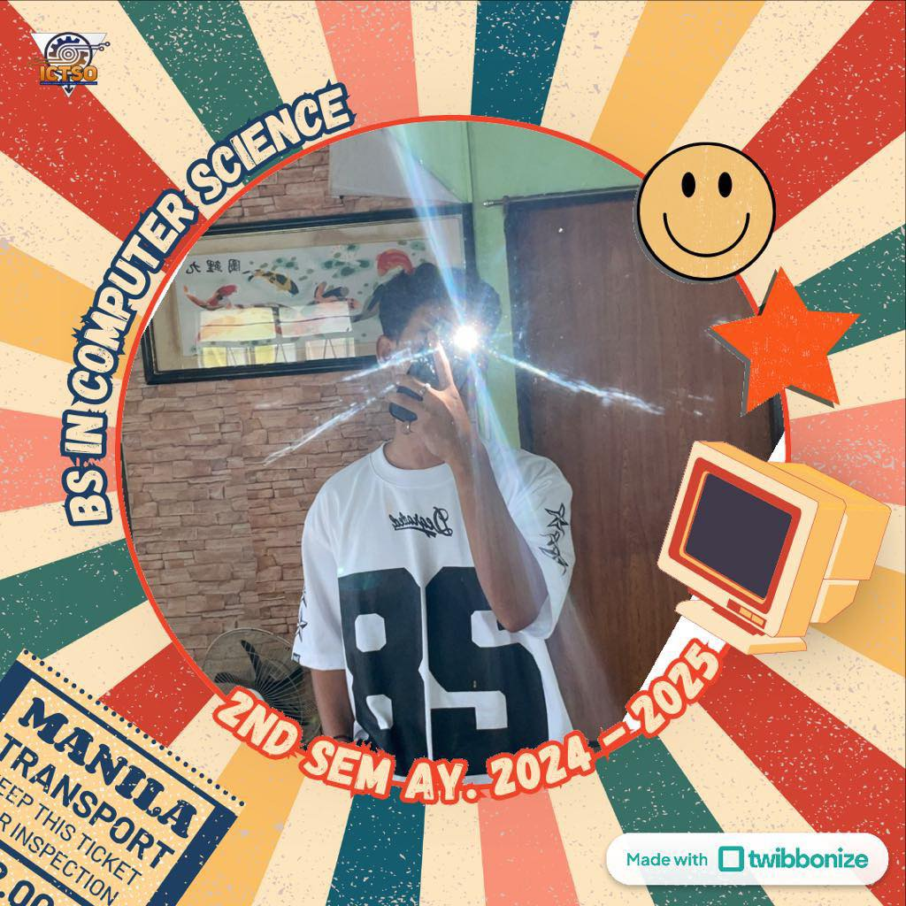
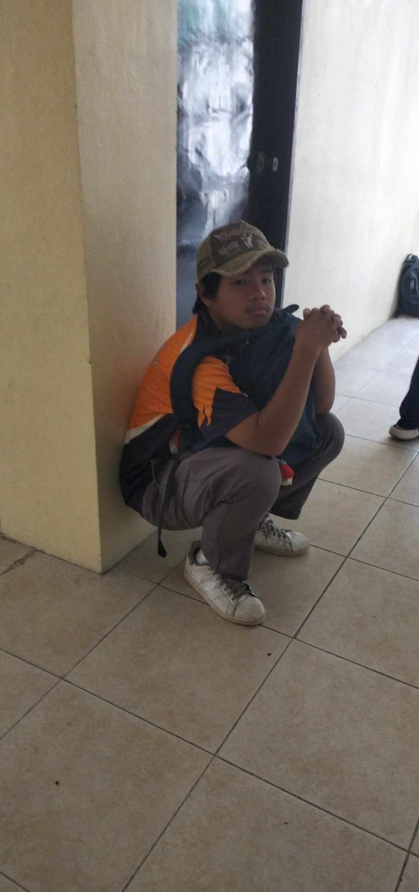
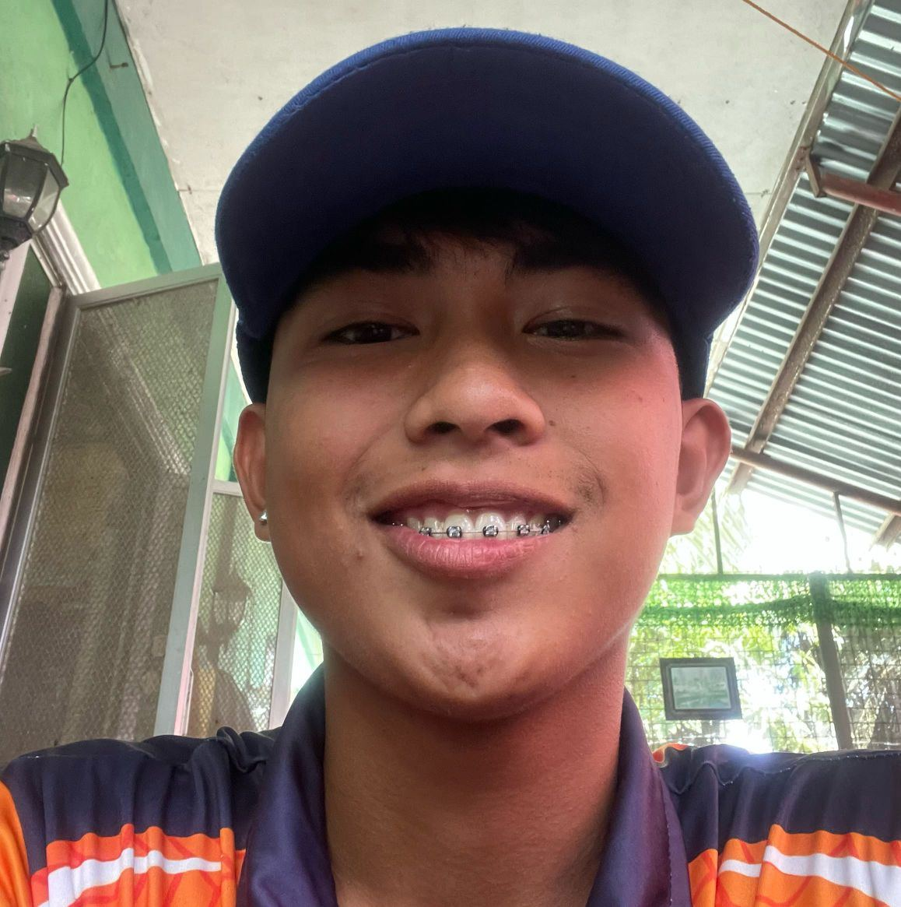

Justinn Modrigo
"GE, TO"
Contact: 0993 980 0322

Carl Datan
WHOOOOOOOOOOP
Contact: 09987654321

Kris Jan Shingo
BOY YAWAK in da hauzz
Contact: 09011223344
"GE, TO"
WHOOOOOOOOOOP
BOY YAWAK in da hauzz